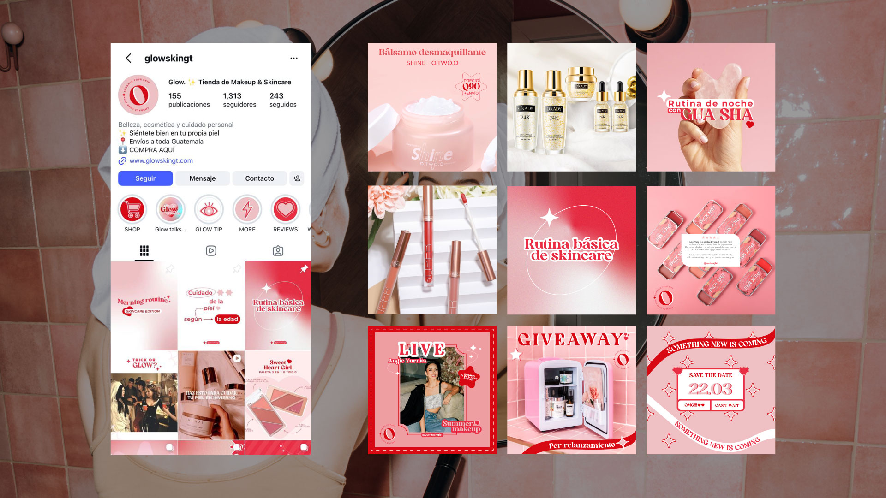
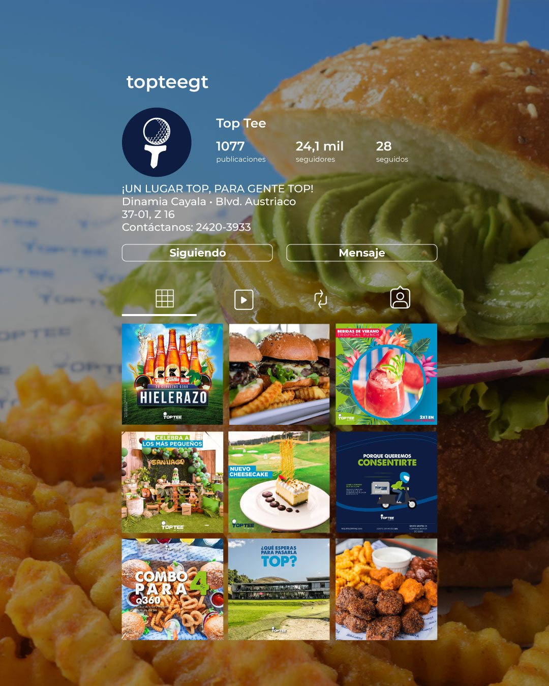
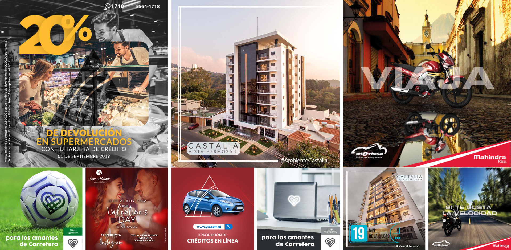

Social Media Collection
Creating content across different brands, audiences and industries.
A curated selection of social media work developed across real estate, beauty, hospitality, banking and other industries. Each project required adapting the visual language and content to the brand, audience and communication objective.
01 / Real Estate
02 / Beauty & Skincare

03 / Food & Hospitality

04 / Across Industries
